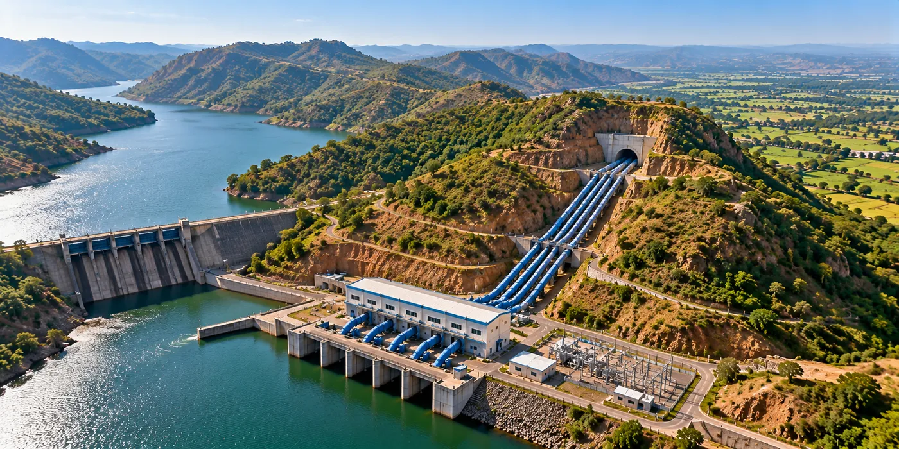

The Assignment
The Nar-Par-Girna River Link Project required a comprehensive Detailed Project Report (DPR) for transferring surplus water from the Nar, Par, Auranga and Ambika basins to the water-scarce Girna command area in Nashik and Jalgaon districts of Maharashtra.
The assignment involved multidisciplinary engineering studies, surveys and infrastructure planning to develop a technically feasible river-linking system capable of supporting irrigation as well as drinking and industrial water requirements.
Our Approach
CS TECH Ai provided engineering consultancy for the preparation of the DPR, covering surveys, investigations, hydraulic planning, infrastructure design and techno-economic assessment.
The engagement included:
- Engineering surveys and investigations
- Assessment and planning of the proposed water-transfer system
- Hydraulic and river-link system design
- Planning and design of dams and pumping infrastructure
- Design of rising mains and gravity mains
- Tunnel planning and design
- Irrigation command-area planning
- Techno-economic analysis and cost estimation
- Preparation of Detailed Project Report (DPR)
- Implementation-ready engineering documentation
The proposed river-linking system was planned to transfer approximately 304.60 Mm³ of water through infrastructure comprising 9 dams, 11 pump houses, 2 sumps, 43 km of rising mains, 32 km of tunnels and 80 km of gravity mains.
The project was planned to support a command area of approximately 56,650 hectares, with water allocation including 185.69 Mm³ for irrigation, 41.61 Mm³ for drinking water and 50.04 Mm³ for industrial requirements.